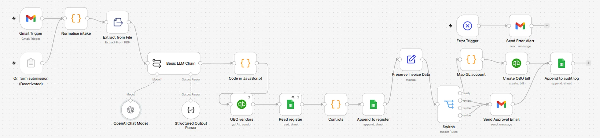
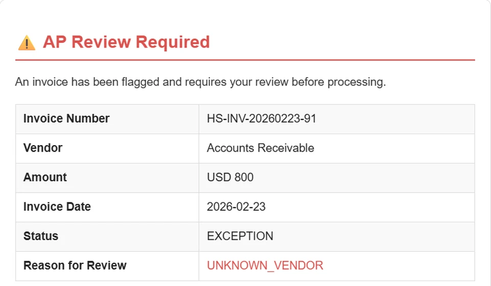
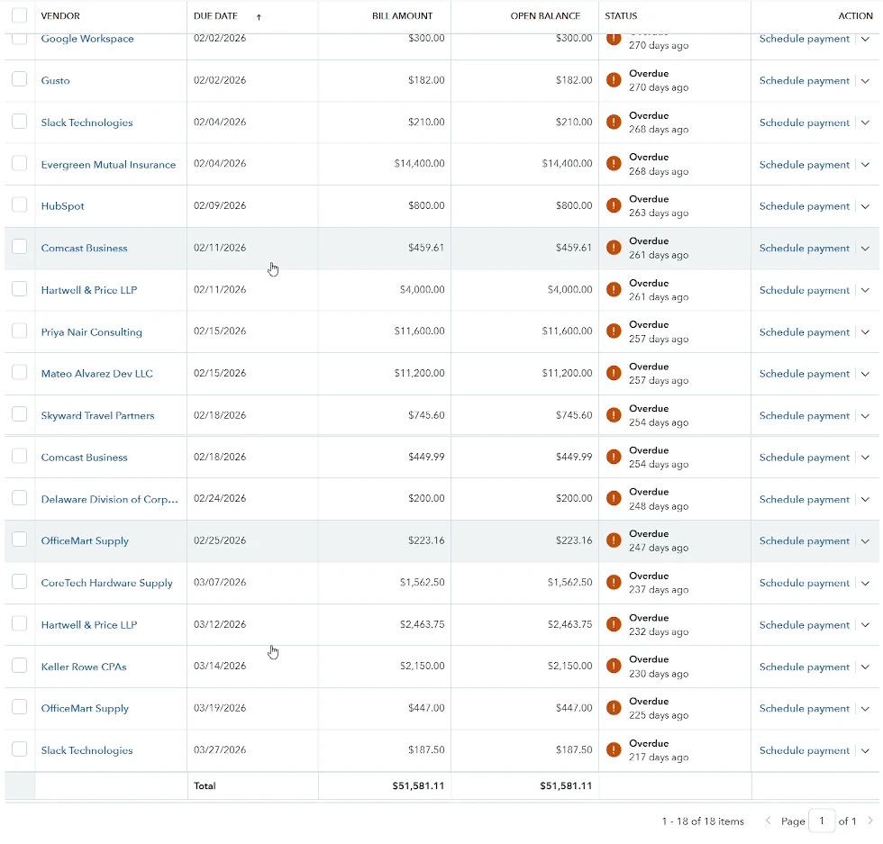
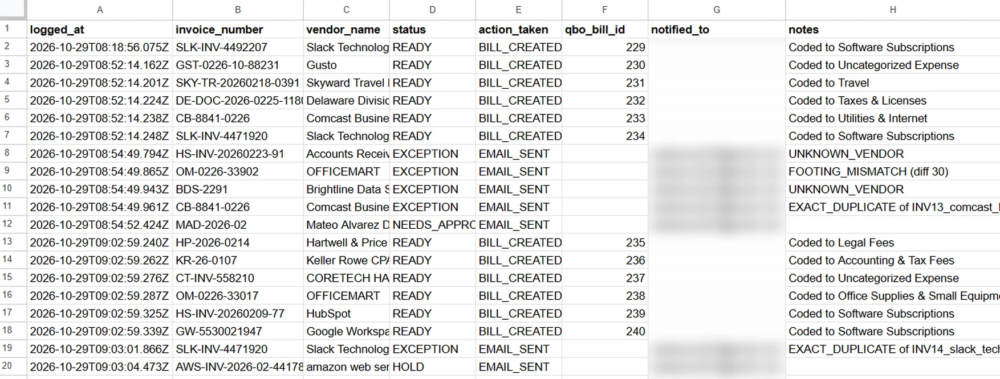

An AI workflow that reads invoice PDFs from an inbox, checks them like an auditor would, sends anything doubtful to a human, and posts the rest as bills in QuickBooks with a full audit trail.
Demo build: QuickBooks Online sandbox company, synthetic invoices. Results from a real client would be measured, not estimated.
Invoices arrive as PDFs in a shared inbox. Someone opens each one, re-keys it into the accounting system, checks it against what was already entered, and hopes nothing slips through.
Built in n8n: 20 nodes from inbox to ledger. The AI only reads the invoice. Rules decide whether it posts.
Every invoice PDF that lands in Gmail starts a run. A web form is wired in as a backup intake.
Gmail Trigger · Extract from FileAn LLM with a structured output parser turns the PDF into clean data: vendor, invoice number, dates, line items, tax, total.
OpenAI · Structured Output ParserLooks up the vendor in QuickBooks, reads the invoice register, then runs the control rules in code.
QBO vendors · Register · ControlsEach invoice goes down exactly one path: ready, review, approval or hold.
Switch (4 outputs)Maps the vendor to the right expense account and creates the bill in QuickBooks. The bill ID comes back as proof.
Map GL account · Create QBO billEvery invoice, posted or not, is written to an audit log with its status, action and reason.
Audit log · Error alerts
Nothing reaches the ledger unless it passes four checks. Designed the way an auditor tests a control: every invoice, every time.
Matched to an existing vendor record in QuickBooks. Unknown vendors are never auto-created.
Checked against every invoice already in the register, by vendor and invoice number.
Line items plus tax must equal the invoice total, or it goes to review.
Large amounts need sign-off, and accruals are held rather than posted.
Seven of the 19 test invoices were stopped before they reached the ledger. Each one triggered a review email with the reason.
| Reason | Invoices |
|---|---|
| Unknown vendor | 2 |
| Exact duplicate | 2 |
| Lines don't foot to total | 1 |
| Over approval limit | 1 |
| Accrual held | 1 |


Invoices that pass every check are coded to the right expense account and created as bills in QuickBooks Online through its API. No re-keying. QuickBooks returns a bill ID for each one, which is written back to the log.
One row per invoice: when it ran, what was decided, the QuickBooks bill ID if it posted, and the reason if it didn't. This is the record an auditor or controller asks for.

I build this workflow around your inbox, your accounting system and your approval rules, then test it on a batch of your real invoices before anything goes live.
Message me on LinkedIn →I'm Sadia Yusuf, a Chartered Accountant (ICAI) with 7+ years in statutory and internal audit, now building finance automation. I design workflows the way I used to test them: controls first, exceptions to people, and an evidence trail for every decision.
Connect on LinkedInNo. The AI only reads the invoice. Fixed rules decide whether it posts, and anything that fails a check goes to a person.
This build uses QuickBooks Online. The same design works with Xero and Zoho Books, which have similar bill APIs.
An error trigger sends an alert, and the audit log shows exactly which invoice failed and why. Nothing is half-posted.
The workflow can run self-hosted on your own server. Invoices are sent to the AI model only for extraction, and access keys stay in your environment.
This case study is a demo build on a QuickBooks sandbox with synthetic invoices. A pilot is tested on your real invoices before go-live.